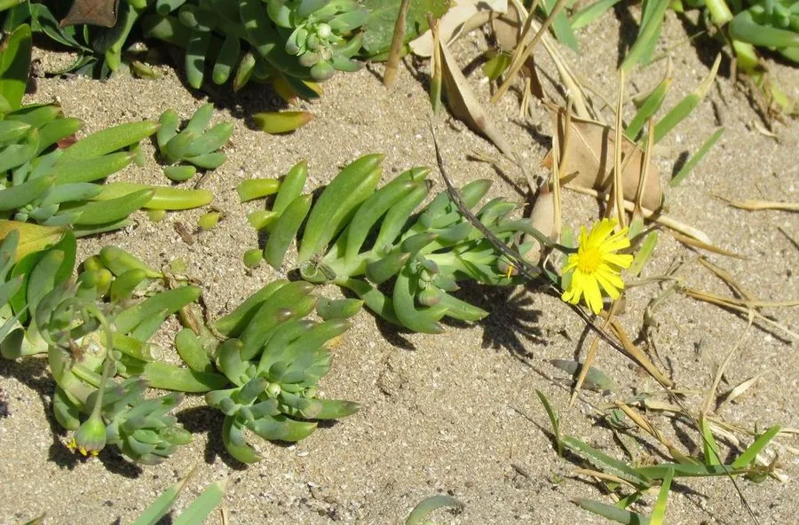

多肉植物 · 植物界
紫弦月 Othonna capensis

菊科厚敦菊属多肉，茎细长匍匐、叶片圆柱形，充足光照下整株呈紫红色，开黄色小花，原产南非，是容易垂吊爆盆的多肉。
- 分类
- 门被子植物门纲木兰纲目菊目科菊科属厚敦菊属
- 栖息环境
- 南非干旱地区的石质坡地与灌丛
- 地理分布
- 原产南非，世界各地盆栽，中国各地常见
- 保护级别
- 暂无评估
物种志
紫弦月为菊科厚敦菊属的多年生肉质草本，茎细长、匍匐或下垂，长可达 30–60 厘米，节间明显。叶片互生，圆柱形或倒卵形，长 1–2 厘米，肥厚多汁，绿色，在光照充足、温差大的环境中呈紫红色。花单生于茎顶，黄色，形似小菊花，直径约 2 厘米，花期春季至秋季；果实为瘦果。
紫弦月原产南非的干旱地区，喜阳光充足、温暖干燥和通风良好的环境，耐旱、怕积水。它茎细长匍匐、叶片圆润，充足光照下整株变成紫红色，像一串紫色的珠子，因此得名。栽培用排水良好的颗粒土，生长期干透浇透，给予充足光照可使叶色更紫，冬季保持 5℃ 以上；繁殖以茎段扦插为主，极易生根。
形态与习性
- 株高茎长 30–60 厘米，匍匐下垂
- 叶片圆柱形，长 1–2 厘米
- 花期春季至秋季，花黄色
- 光照喜充足光照，叶色更紫
- 水分耐旱，干透浇透
- 土壤排水良好的颗粒土
- 繁殖茎段扦插，极易生根
- 特点强光温差下整株紫红
趣味知识
- 紫弦月的叶片在强光和温差下会变成紫红色，像一串紫珠子。
- 它茎细长匍匐，适合吊盆栽培，很容易垂吊爆盆。
- 紫弦月开黄色小花，与紫红色叶片形成鲜明对比。